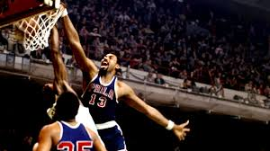

All Time Season Points Leaders
1. Wilt Chamberlain 1961-62
4,029 Points

Season Stats:
| Season | Age | Tm | Pos | G | GS | MP | FG% | FT% | TRB | AST | PTS |
|---|---|---|---|---|---|---|---|---|---|---|---|
| 1961-62 | 25 | PHW | C | 80 | 48.5 | .506 | .613 | 25.7 | 2.4 | 50.4 |
2. Wilt Chamberlain 1962-63
3,856 Points
Season Stats:
| Season | Age | Tm | Pos | G | GS | MP | FG% | FT% | TRB | AST | PTS |
|---|---|---|---|---|---|---|---|---|---|---|---|
| 1962-63 | 26 | SFW | C | 80 | 47.6 | .528 | .593 | 24.3 | 3.4 | 44.8 |
BBRef page ▶ Wikipedia ▶
3. Michael Jordan 1986-87
3,041 Points
Season Stats:
| Season | Age | Tm | Pos | G | GS | MP | FG% | FT% | TRB | AST | PTS |
|---|---|---|---|---|---|---|---|---|---|---|---|
| 1966-67 | 30 | PHI | C | 81 | 45.5 | .683 | .441 | 24.2 | 7.8 | 24.1 |
BBRef page ▶ Wikipedia ▶
4. Wilt Chamberlain 1960-61
3,033 Points
Season Stats:
| Season | Age | Tm | Pos | G | GS | MP | FG% | FT% | TRB | AST | PTS |
|---|---|---|---|---|---|---|---|---|---|---|---|
| 1960-61 | 24 | PHW | C | 79 | 47.8 | .509 | .504 | 27.2 | 1.9 | 38.4 |
BBRef page ▶ Wikipedia ▶
5. Wilt Chamberlain 1963-64
2,948 Points

Season Stats:
| Season | Age | Tm | Pos | G | GS | MP | FG% | FT% | TRB | AST | PTS |
|---|---|---|---|---|---|---|---|---|---|---|---|
| 1963-64 | 27 | SFW | C | 80 | 46.1 | .524 | .531 | 22.3 | 5.0 | 36.9 |
BBRef page ▶ Wikipedia ▶
Made with help from ESPN and Basketball Reference